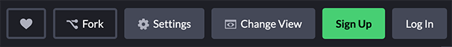
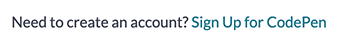
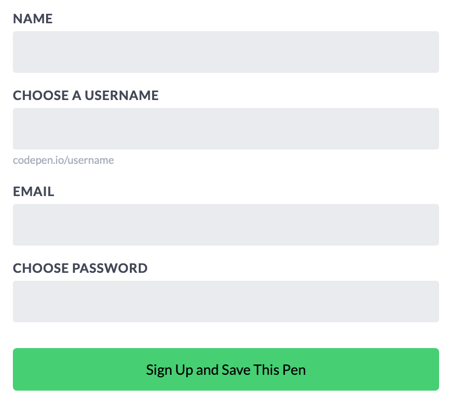
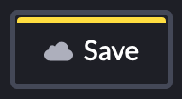
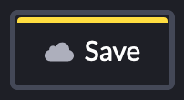
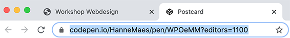
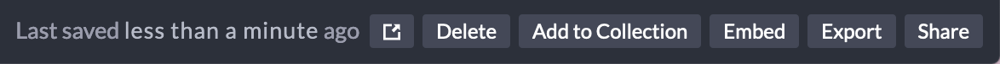
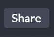
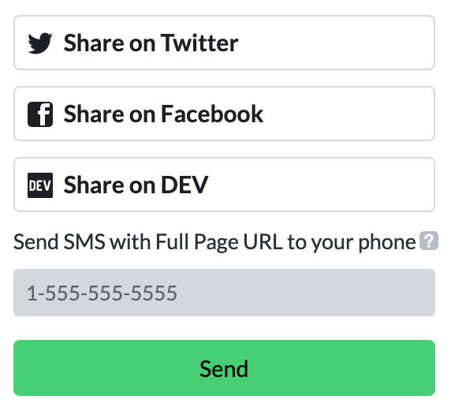

We klikken met de rechter muisknop en selecteren plakken.

Hier zijn enkele links die je tijdens de workshop kunnen helpen.
Welkom op deze webdesign workshop.
Tijdens deze workshop zal je een eigen verjaardagskaart leren maken.
Hierdoor zal je de beginselen van het maken van websites leren.
Op deze website staat alle informatie die je nodig hebt om deze workshop te vervolledigen.
Klik hier om de verjaardagskaart te openen en aan te beginnen passen.
Lees verder om te kijken welke aanpassingen er allemaal mogelijk zijn.
Om tekst aan te passen zoek je deze in de HTML-code en pas je ze aan.
De tekst van een website behoord tot de structuur van de website en staat daarom in onze HTML-code.

Om kleuren aan te passen zoek je in CSS het juiste stukje code en pas je de kleur aan.
De kleuren van een website behoord tot het design van de website en staan daarom in onze CSS-code.
Om de achtergrond kleur van onze website aan te passen, moeten we hiernaar opzoek gaan in onze CSS-code.
Gelukkig kun je deze makkelijk vinden.
Onze CSS code is onderverdeeld met titels.
Alle code onder deze titel heeft te maken met de achtergrond.
Om exact te vinden waar we onze aanpassingen moeten doen, kijken we naar de licht grijze tekst.
Deze geeft uitleg over wat het stukje code eronder doet.
Je kan op 2 manieren je kleur kiezen.
Dit zijn 2 websites waar je kleuren op kan vinden.
Nu we weten waar we moeten zoeken kunnen we de kleuren van onze website aanpassen.

De afbeeldingen van een website behoren tot het design, om deze aan te passen moeten we dus in de CSS-code gaan zoeken.
Dit is het stukje code waar we de afbeelding kunnen veranderen.
Eerst zoeken we via Google of Giphy een gepaste afbeelding.
Wanneer we onze afbeelding gevonden hebben klikken we erop om ze te selecteren.

Dan klikken we met de rechter muisknop op de afbeelding en selecteren we Afbeelding bekijken.

Om de afbeelding naar onze code te kunnen kopiëren, selecteren we de tekst bovenaan.
We klikken met de rechter muisknop en selecteren kopiëren.
Nu gaan we terug naar codepen en verwijderen de tekst van de vorige afbeelding.
We klikken met de rechter muisknop en selecteren plakken.
Zoals we zien heeft onze website nu aan andere afbeelding. 💪
Nu je weet hoe je alles kan aanpassen, is het tijd om je eigen kaarten te gaan programmeren!
Het moet geen verjaardagskaart zijn, laat je fantasie de vrije loop en verzin een zo origineel mogelijke kaart.
Om je kaart te versturen, moet je in het menu rechtsboven op de Fork knop klikken.

 Een fork maken is een kopie van een project maken op je eigen profiel.
Een fork maken is een kopie van een project maken op je eigen profiel.
Omdat je nog geen profiel hebt zal je er eerst een aan moeten maken.
Klik onderaan het kader op Sign Up for CodePen.

Vul alle velden in om je profiel aan te maken.

Proficiat, je hebt nu je eigen CodePen profiel.
 Save het project op onder je eigen profiel.

Save het project op onder je eigen profiel.

De makkelijkste manier om je kaart te delen is om het adres van je website te versturen.
Selecteer het volledige adres, kopieer en verstuur het.

Wanneer andere mensen naar dit adres surfen komen ze op je kaart terecht.
Klik rechts onderaan op de Share knop.   Selecteer Share on Twitter of Share on Facebook. 
Wil je eens iets anders proberen aan te passen dan een kaart?
Codepen staat vol met projecten van mensen.
Zoek een project dat je leuk lijkt. 🔥
Klik erop en je kan het project beginnen aanpassen! 💪